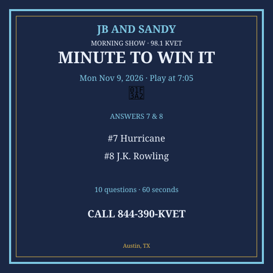

M2W Nov 9-13 2026
New packet. Questions get harder as you go. Graphics are Q7 & Q8 only.
Monday — Mon Nov 9, 2026
Question 1: What do you put on a birthday cake?
Answer: Candles
Question 2: How many days in November?
Answer: 30
Question 3: What is the name of Austin’s veterans-day-weekend trail of lights season kickoff-ish — skip; what’s Zilker’s December thing?
Answer: Trail of Lights
Question 4: What animal gives us wool?
Answer: Sheep
Question 5: Which sport has a love score?
Answer: Tennis
Question 6: What is the capital of Ireland?
Answer: Dublin
Question 7: What do you call a storm over 74 mph rotating?
Answer: Hurricane
Question 8: Who wrote “Harry Potter”?
Answer: J.K. Rowling
Question 9: What is 25 × 4?
Answer: 100
Question 10: Which country is Mount Fuji in?
Answer: Japan
Social card for Q7 & Q8 — download and post:
{kind=link}

Tuesday — Tue Nov 10, 2026
Question 1: What do you use to open a bottle of wine?
Answer: Corkscrew
Question 2: How many inches in a foot?
Answer: 12
Question 3: What is the name of Texas’s state bird?
Answer: Northern mockingbird
Question 4: What color is a polar bear’s skin under the fur?
Answer: Black
Question 5: Which planet spins on its side?
Answer: Uranus
Question 6: What is espresso made from?
Answer: Coffee beans
Question 7: What does BYOB stand for?
Answer: Bring Your Own Bottle / Beer
Question 8: Who composed “Boléro”?
Answer: Ravel
Question 9: What is 11 × 12?
Answer: 132
Question 10: Which U.S. state was the last of the contiguous 48 admitted?
Answer: Arizona (1912) — or Alaska/Hawaii later; last contiguous is Arizona
Social card for Q7 & Q8 — download and post:
{kind=link}
Wednesday — Wed Nov 11, 2026
Question 1: What U.S. holiday is November 11?
Answer: Veterans Day
Question 2: How many stars on the current U.S. flag?
Answer: 50
Question 3: What is the name of Austin’s military-appreciation local angle — skip; what’s Fort Cavazos’s old name?
Answer: Fort Hood
Question 4: What is 8 × 7?
Answer: 56
Question 5: Which country is Prague the capital of?
Answer: Czech Republic / Czechia
Question 6: What is the smallest prime greater than 10?
Answer: 11
Question 7: What does NATO stand for?
Answer: North Atlantic Treaty Organization
Question 8: Who wrote “The Iliad”?
Answer: Homer
Question 9: What year did the U.S. enter World War I?
Answer: 1917
Question 10: Which desert covers much of North Africa?
Answer: Sahara
Social card for Q7 & Q8 — download and post:
{kind=link}
Thursday — Thu Nov 12, 2026
Question 1: What do you carve in October?
Answer: Pumpkin
Question 2: How many cups in a pint?
Answer: Two
Question 3: What is the name of Austin’s pecan-heavy state tree?
Answer: Pecan
Question 4: What do you call a male duck?
Answer: Drake
Question 5: Which country is home to Kangaroo Island?
Answer: Australia
Question 6: What is the main job of red blood cells?
Answer: Carry oxygen
Question 7: What does TBA stand for?
Answer: To Be Announced
Question 8: Who painted “Water Lilies”?
Answer: Monet
Question 9: What is 13 × 4?
Answer: 52
Question 10: Which U.S. state is the farthest west of the Lower 48?
Answer: Washington or California — accept Washington (Cape Alava) or Alaska if they say all 50
Social card for Q7 & Q8 — download and post:
{kind=link}
Friday — Fri Nov 13, 2026
Question 1: What do people say on Friday the 13th?
Answer: It’s unlucky
Question 2: How many days in two weeks?
Answer: 14
Question 3: What is the name of Austin’s Friday happy-hour food?
Answer: Tacos
Question 4: What is 9 × 9?
Answer: 81
Question 5: Which country is the origin of baklava?
Answer: Turkey / Greece / Levant — accept Turkey or Greece
Question 6: What is the largest volcano on Earth (shield, Hawaii)?
Answer: Mauna Loa
Question 7: What does RSVP require you to do?
Answer: Reply
Question 8: Who wrote “Moby-Dick”?
Answer: Herman Melville
Question 9: What is the next number after 99?
Answer: 100
Question 10: Which city is the United Nations headquarters in?
Answer: New York
Social card for Q7 & Q8 — download and post:
{kind=link}